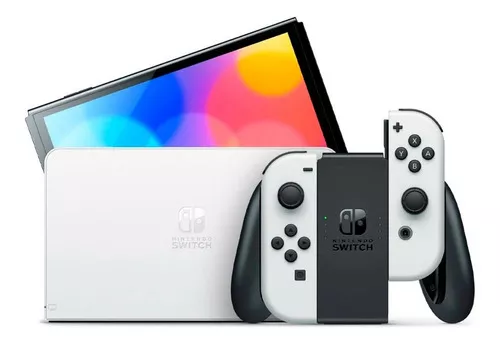
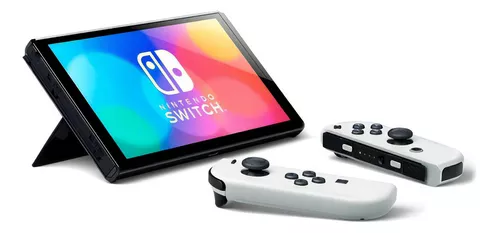
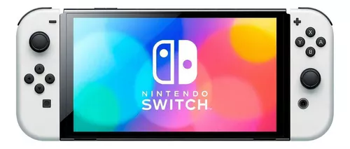
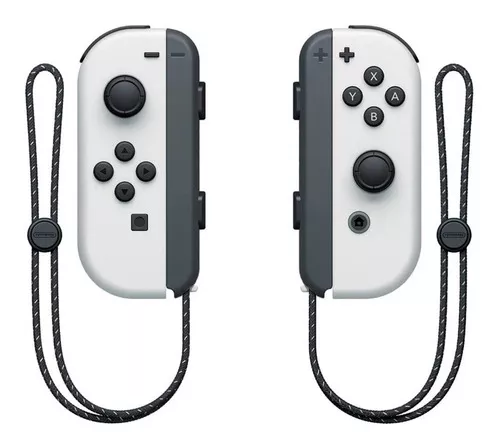
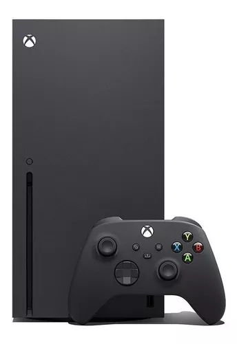
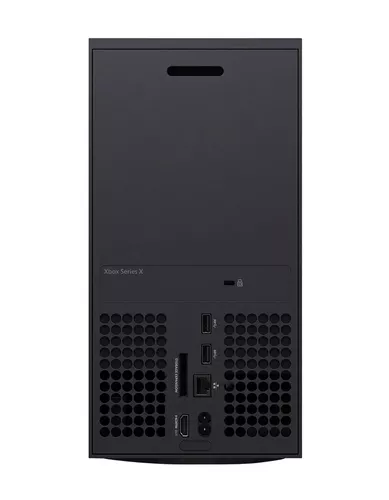
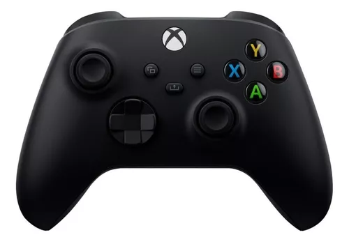
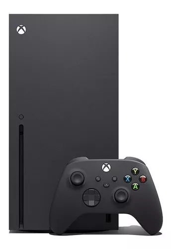
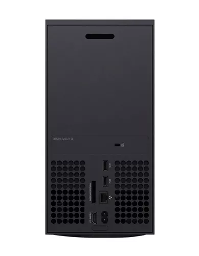
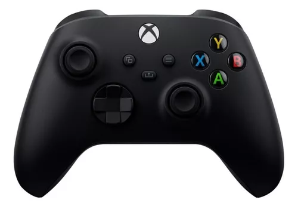

Nintendo Switch Oled 64gb Standard Color Blanco Y Negro Color Blanco/negro
Switch se convirtió en una de las consolas más versátiles del mercado gracias a su uso portátil y de sobremesa. Nintendo desarrolló este modelo con el objetivo de tener todas las comodidades de la tecnología de elite en un aparato portátil con el que podrás jugar y disfrutar de diverso contenido online.
 




